Gate Review 3 · Proof-of-Concept Prototype
Proof-of-concept design, fabrication and assembly
The POC is a full-scale, working CuPickle built in the U-M machine shop from the same frame drawings, motor, load cell, peg, driver chip and amplifier chip as the MVP. Its job is measurable evidence that one fixed 2 mm press grades a ball correctly, repeatably and within 30 s. It swaps the MVP's custom board, battery, touchscreen and molded case for an Arduino on a breadboard, a 12 V bench supply, a small display and a 3D-printed case.
Status (Nov. 14): drawings, fabrication plans, assembly plan and BOM are complete. Fabrication preparation is approved; machining starts after shop personnel approve the revised drawings, and powered testing waits for the safety review. Full plan: Activity 25 (PDF); planning worksheet: Prototyping Worksheet (PDF).
POC purpose and scope
| Worksheet item | POC plan |
|---|---|
| What it must prove | The press, load cell and grading firmware measure ball stiffness accurately and repeatably, fast enough for courtside use |
| Prototype type and fidelity | Full-scale working prototype, one unit; MVP fidelity in the force path, low fidelity in packaging and interface |
| Drivers and requirements | Playability grading (Driver 1, S1); force-path accuracy (Driver 2, S2, S16); ball seating and single position (Driver 3); cycle time (Driver 4, S7) |
| Failure modes (FMEA) | Wrong grade (288); ball not held (392); wrong reference or temperature (210); force reading wrong (175); ball pressed too far (84) |
| MVP functions included | Contact detection, single 2 mm press at controlled speed, force logging, stiffness fit, grade against a reference, start/stop, result display |
| Omitted or simplified | Custom board (Arduino + breakouts); battery and USB-C (bench supply); touchscreen and buzzer (OLED); molded case (printed); home switch, IR sensor and door interlock (MVP only); anodize and steel rod |
| Added for testing | Force and travel logged over USB; adjustable speed and depth; firmware timestamps; ball and room temperature read with an external thermometer (no temperature sensor in the POC) |
| Can support | Grading accuracy, repeatability, cycle time, stall thrust, ball damage, because the force path uses the MVP's parts and geometry |
| Cannot support | Battery life, molded-case strength, touchscreen interface, IR and door sensors, unit cost |
Planned tests and success criteria
| Test | Driver or failure mode | Success criterion | Trials | Equipment |
|---|---|---|---|---|
| Stiffness ratio vs. Pickleball Science | Driver 1 | Ratio within 0.05 of 0.90 (4 games) and 0.80 (8 games) | New, 4-game, 8-game X-40s | Digital force gauge, thermometer |
| Blind grading vs. bounce test | Driver 1; wrong grade | ≥ 90% agreement | ≥ 20 mixed balls | Drop rig |
| Gauge R&R | Driver 2; force reading | %GRR < 10 | 10 balls × 3 operators × 3 repeats | Steel reference ball |
| Re-seat spread | Driver 3; ball not held | Spread ≤ 5% of stiffness | 5 balls × 20 re-seats | Marked balls |
| Cycle time | Driver 4 | ≤ 30 s | 10 first-time users | Stopwatch, timestamps |
| Ball damage | Pressed too far | Rebound change ≤ 0.5 in. after 50 tests | 3 balls + controls | Drop rig |
| Durability | S12 | 1,000 cycles, no failure; steel-ball drift ≤ 2% | 1,000 cycles | Steel reference ball |
| Stall thrust | Driver 2; load-cell overload | ≤ 177 N, under the 235 N safe overload | 3 stalls | Digital force gauge |
How temperature is handled
Ball stiffness changes with temperature, so every POC test session (1) conditions balls in the test room for at least 1 h; (2) records room temperature and each ball's surface temperature with an external thermometer; (3) runs only when both are within 70 ± 5 °F (about 18–24 °C), the USA Pickleball test condition; and (4) re-tests the new reference ball at the start and end of the session. Because grades are ratios to that same-session reference, a uniform temperature shift cancels; a reference that drifts more than 2% between start and end flags the session for repeat.
Relationship between the POC and MVP
| Design element | MVP | POC | Reason for difference | Effect on validation |
|---|---|---|---|---|
| Material: frame and press parts | 6061-T6, tumble-deburred, clear anodized | 6061, deburred, bare | Shop build; anodize adds cost and a week | None on the force path |
| Material: Anti-Rotation Rod (P07) | 4140 pre-hardened steel, black oxide | 6061 aluminium | Easier to turn in the shop | No effect on force; bushing wear watched |
| Material: case | Injection-molded ABS, clear window | 3D-printed ABS body, clear PC window | No mold for one unit | Outside the force path; strength and sealing not tested |
| Geometry or scale | Full scale | Full scale, same drawings | — | Grading, stiffness and time transfer directly |
| Component: controller, driver, amplifier | Custom board with TMC2209 and HX711 chips | Arduino Uno R3, TMC2209 breakout, HX711 breakout on a breadboard | Board not yet designed | Same chips; breadboard wiring may add noise, so POC repeatability is conservative |
| Component: power | Rechargeable battery, USB-C | 12 V bench supply | Battery not needed for one unit | Battery life not tested; current per test measured to size it |
| Component: display and controls | Touchscreen with start, stop, info, result | SSD1306 OLED; on/off and start/stop slide switches | Cost and lead time | Shows the result; trust study uses a screen mock-up |
| Component: sensors | Home switch, IR ball sensor, door reed switch | Not included | MVP features | Not tested on the POC; trained operators only |
| Manufacturing process | Fiber laser + CNC mill, bar-fed lathe, molding, contract PCB | Water jet + manual mill, manual lathe, 3D printing, hand wiring | U-M shop resources | Part-to-part variation not represented |
| Included function | All MVP functions | All but battery, touchscreen, interlock, IR check, homing | Scope and time | Grading, time and force transfer; safety and UI do not |
| Testing feature | None | USB force–travel log; adjustable speed and depth; timestamps | Needed to measure | Removed in the MVP; firmware re-checked without them |
Interpreting results. POC grading, %GRR, time and damage results are read as MVP results because the force path is identical; noise results are treated as an upper bound. Further work before applying results to the MVP: repeat gauge R&R and the stiffness-ratio test on the first custom board; size the battery from the measured current per test and test tests-per-charge; check bushing wear with the steel rod; test the home switch, IR sensor and door interlock on the first MVP build; drop-test the molded case.
POC CAD and engineering drawings
Every custom part has a dimensioned drawing (inches; ±0.01 two-place, ±0.005 three-place; ASME Y14.5-2009; 6061 aluminium; deburr all edges). Click a drawing for full size; machined-part PDFs are linked under each.

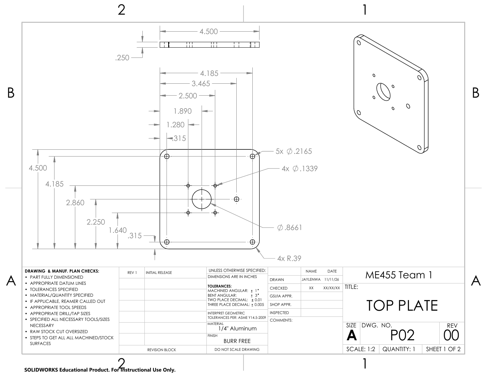

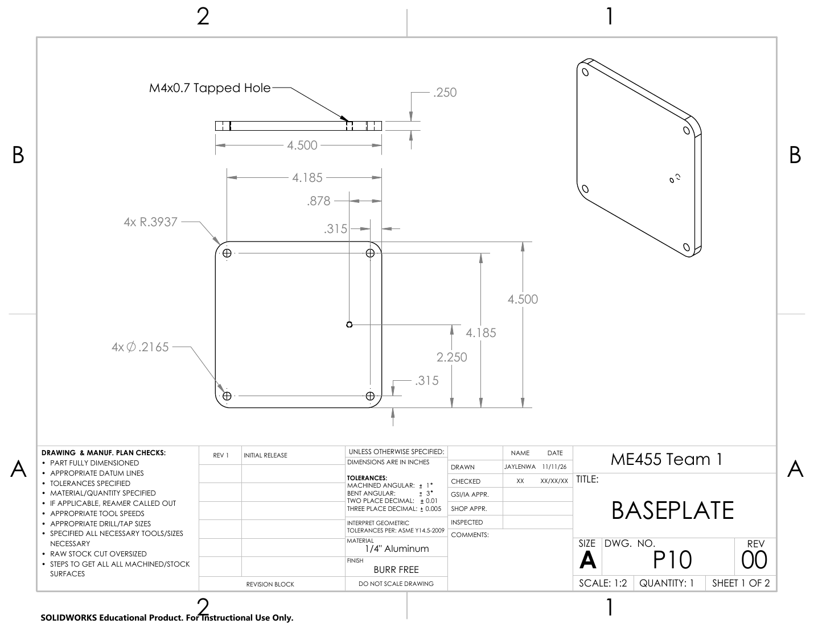

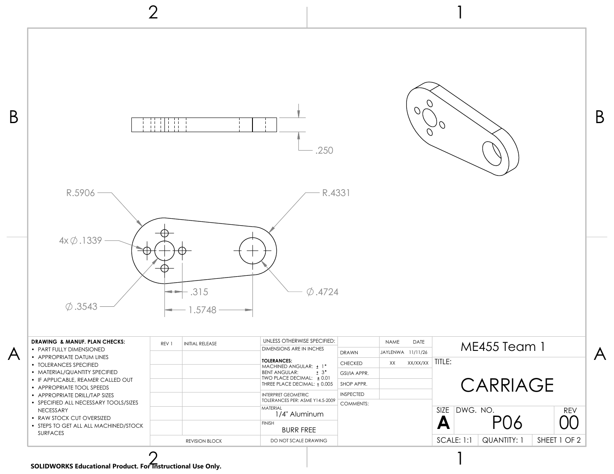

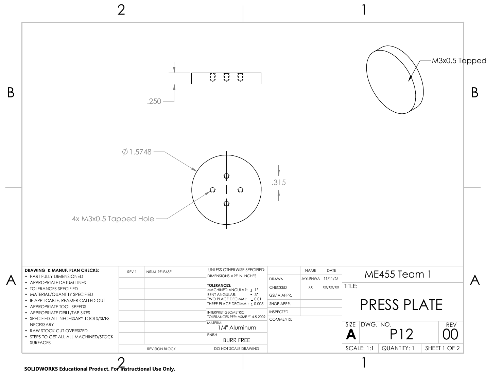

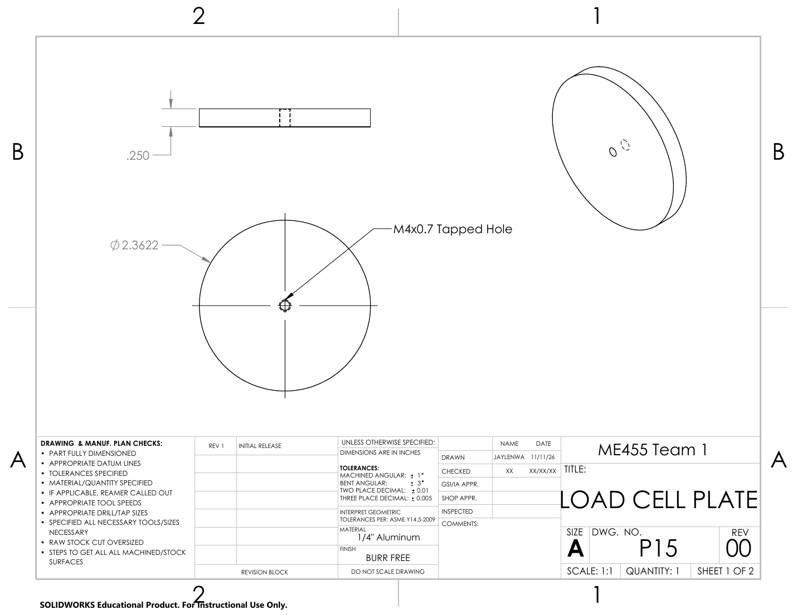

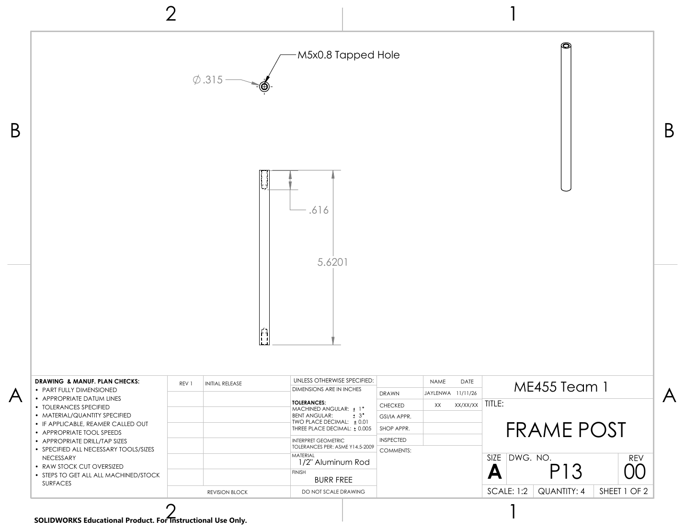

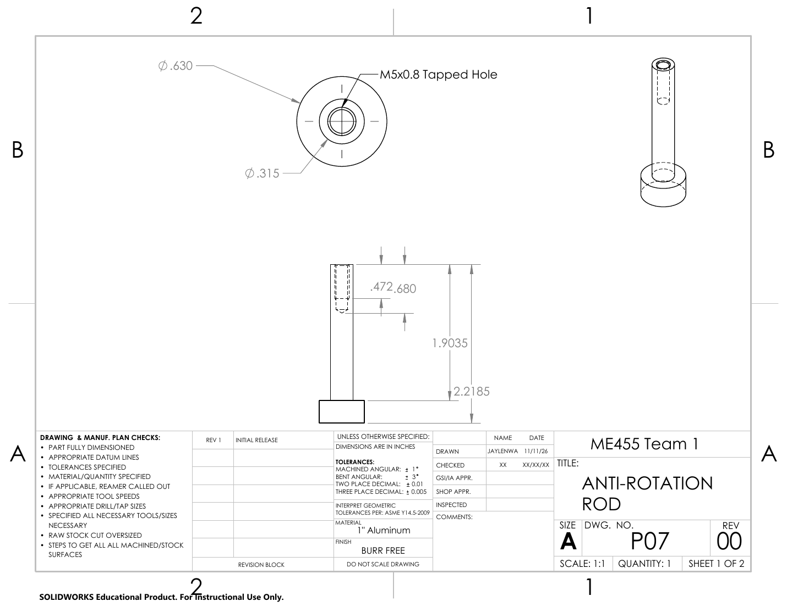

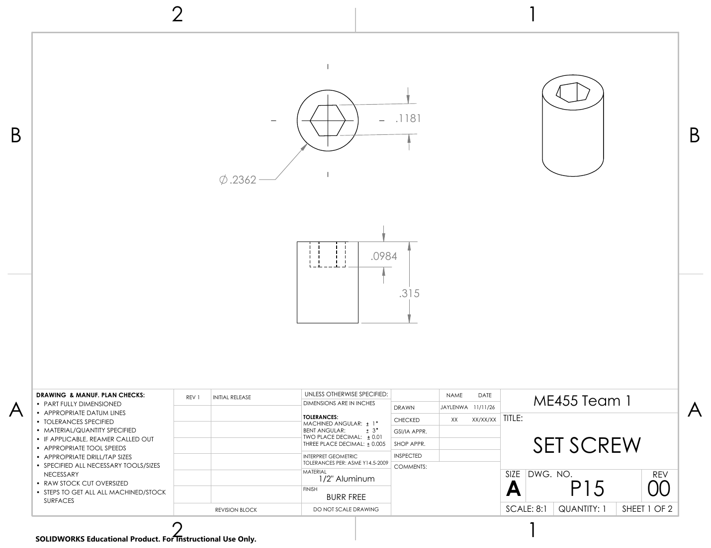

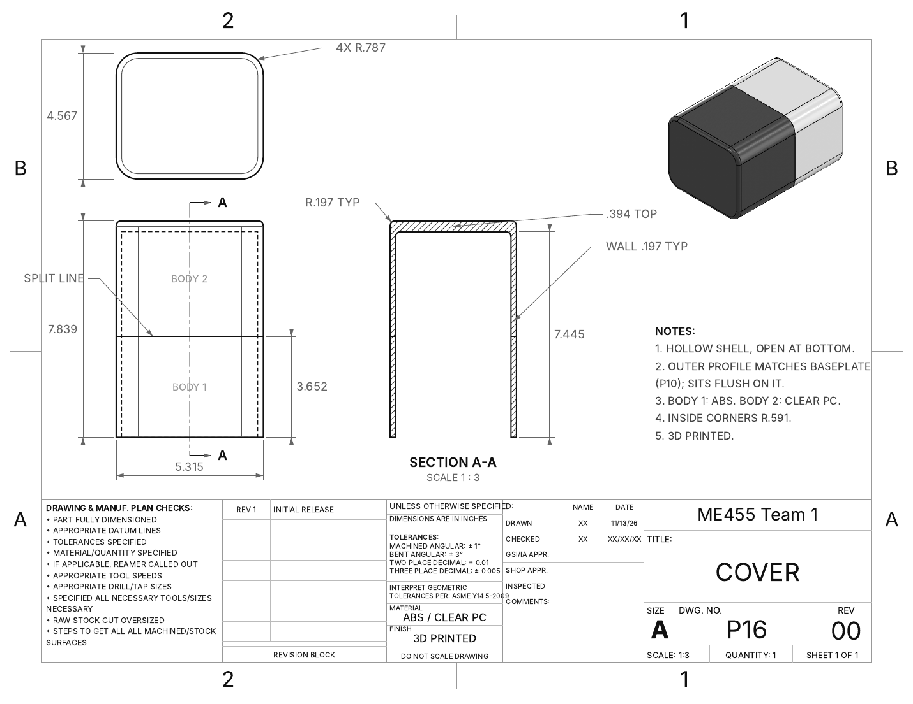
Critical characteristics and fits
| Part | Characteristic | Requirement | Why |
|---|---|---|---|
| P06 | Bushing bore | Ø12.000 mm H7 (Ø.4724–.4731 in.); bushing OD measured before reaming for 0.01–0.04 mm interference | Press fit holds the bushing square to the rod |
| P02, P06 | Rod hole to bore / nut-hole spacing | 1.575 in. ±.002, both parts | Rod must slide without binding |
| P02, P10 | Post hole pattern | 4.185 in. square, ±.005 true position | Plates parallel; posts square |
| P13 | Length | 5.6201 in., all four within .002 of each other | Press Plate parallel to Load Cell Plate |
| P07 | Flange face to top end | 2.2185 in. ±.005 | Sets the 69.05 mm hard-stop gap |
| P12 | Ball face | Flat within .002 in. | Even contact on the ball |
Drawing revisions before shop approval
| Drawing | Revision | Owner | Status |
|---|---|---|---|
| P06 Carriage | Fully dimension the 4 × Ø.1339 holes (vertical spacing as well as the .315 offset); add the reamed bore size and H7 fit | Jaylen | Before shop approval |
| P12 Press Plate | Locate the 4 × M3 holes with center-to-center spacing | Jaylen | Before shop approval |
| P13 Frame Post | Drill and thread depths called out at both ends | Jaylen | Before shop approval |
| All | Critical tolerances and fits from the table above | Jaylen | Before shop approval |
POC fabrication plan
Shop staff water-jet the plate outlines (each team gets one 30-minute slot a day); holes, taps, bores and reams are done on the manual mill and round parts on the lathe. Drawings and plans are approved by Chris and the shop staff before cutting. Standard parts are bought: motor, lead screw and nut, bushing, load cell, peg, electronics and fasteners.
| Part | Material and stock | Process and sequence | Equipment and tooling | Inspection | Time | Who |
|---|---|---|---|---|---|---|
| P02 Top Plate (1) | 6061, 1/4 in. plate | Water-jet outline → mill: find datum, center drill + drill 5 × 7/32 in. and 4 × #29 → drill 3/4 in. pilot at the motor bore → bore to Ø.8661 (+.002/−.000) with a boring head → deburr | Water jet; mill, vise, 1-1/2 in. parallels, edge finder, #2/#3 center drills, 7/32 in. and #29 drills, 3/4 in. drill, boring head | Calipers on hole positions; bore gauged; motor boss and posts test-fit | 1.75 h | Jaylen |
| P10 Baseplate (1) | 6061, 1/4 in. plate | Water-jet → mill: datum, drill 4 × 7/32 in. → drill #30, tap M4 × 0.7 → deburr | Water jet; mill, vise, edge finder, drills, M4 tap | Hole positions; lines up with P02; M4 thread check | 0.75 h | Jaylen |
| P06 Carriage (1) | 6061, 1/4 in. plate | Water-jet → measure bushing OD → mill: drill 4 × #29, 23/64 in. nut hole, 29/64 in. pilot → ream Ø12 mm H7 → deburr | Water jet; mill, edge finder, #2/#5 center drills, drills, 12 mm H7 reamer, micrometer | Micrometer on bushing OD; bore with 12 mm go/no-go pin; bushing fit; slides on rod | 1.5 h | Jaylen |
| P12 Press Plate (1) | 6061, 1/4 in. plate | Water-jet → mill: center, drill 4 × #39, tap M3 × 0.5 through → deburr | Water jet; mill, #1 center drill, #39 drill, M3 tap | M3 screw threads in all 4; face flat | 0.75 h | Jaylen |
| P15 Load Cell Plate (1) | 6061, 1/4 in. plate | Water-jet → mill: center, drill #30 through, tap M4 × 0.7 → deburr | Water jet; mill, #2 center drill, #30 drill, M4 tap | Peg threads in square | 0.5 h | Jaylen |
| P13 Frame Post (4) | 6061, 1/2 in. rod | Band saw → lathe: face, center drill, turn Ø.315 with live center, drill #19 to .700 deep, tap M5 × 0.8 to .616 full thread → part off → flip on Ø.315, face to 5.6201, drill #19 to .700 deep, tap M5 × 0.8 to .616 → deburr | Band saw; lathe, 1/2 in. and 5/16 in. collets, live center, tailstock chuck, #19 drill, M5 tap | Ø.315 and 5.6201 length; four lengths within .002; thread depth both ends | 4 h | David |
| P07 Anti-Rotation Rod (1) | 6061, 1 in. rod | Band saw → lathe: face, turn Ø.630 flange and Ø.315 shaft, part off → flip on flange, face to 2.2185, drill #19 .680 deep, tap M5 .472 deep → deburr | Band saw; lathe, collets, live center, parting tool, #19 drill, M5 tap | Ø.315, Ø.630, 2.2185 overall; M5 thread | 1.5 h | David |
| P16 Case (1) | ABS filament (body); clear PC filament (window) | Print the body in ABS and the window in clear PC from the P16 drawing; fit window | 3D printer (U-M makerspace) | Outside size; slides over the frame; sits flush on the Baseplate | ≈ 18 h print | Rhia |
| Total | ≈ 10.75 h shop + water-jet slot; ≈ 18 h print | |||||
Safety precautions. Safety glasses at all times; no gloves, loose sleeves or jewellery at the mill or lathe; long hair tied back; work held in a vise or collet, never by hand; chuck key never left in the chuck; clear chips with a brush, spindle stopped; tap by hand with the spindle off; seat the live center before turning long parts; ream and bore at low speed; hands clear of the band-saw blade; deburr before handling; only machines you are trained on, with shop staff present; water jet run by shop staff only.
POC assembly plan
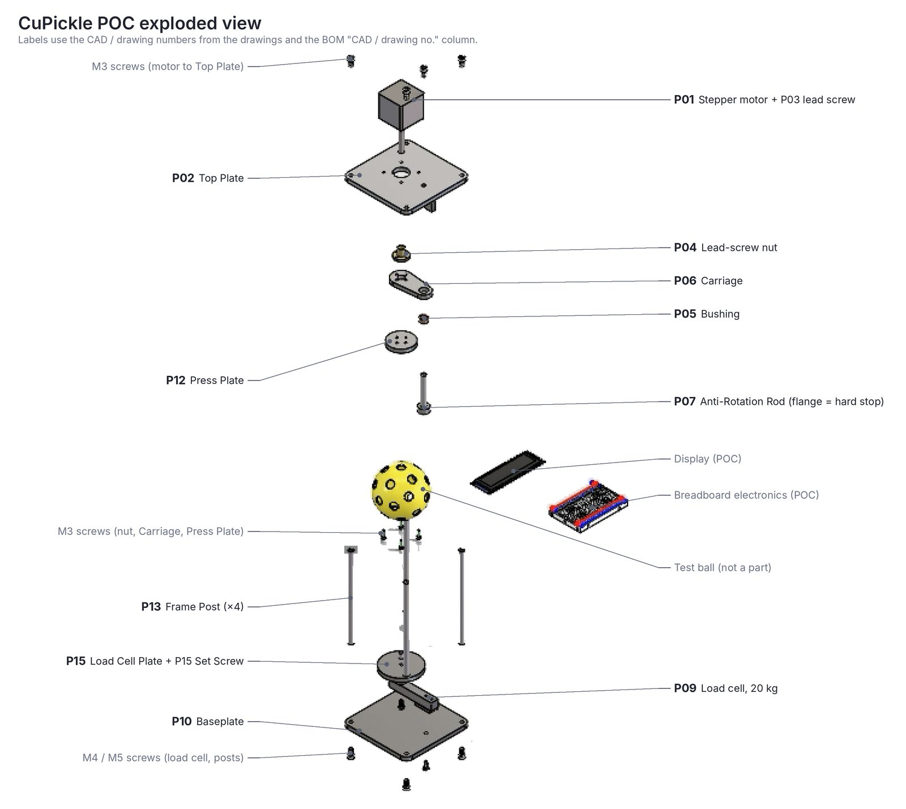
Build three sub-assemblies (base, carriage, top), then join them. Every screw is reachable with a straight hex key from above or below before the Top Plate goes on.
| Step | Operation | Parts | Fasteners (qty × size) | Tools | Check |
|---|---|---|---|---|---|
| 1 | Base: bolt the load cell's fixed end to the Baseplate; mount the Load Cell Plate on the free end; thread the peg into the plate's center so it stands about 3 mm proud | P10, P09, P15, P14 | Load-cell screws per the load cell's holes (M4); 1 × M4 × 8 set screw | 2.5 and 2 mm hex keys | Free end of the load cell clears the Baseplate |
| 2 | Screw the four posts to the Baseplate from below | P13 ×4, P10 | 4 × M5 × 0.8 × 16 mm SHCS | 4 mm hex key | Posts seated flat |
| 3 | Carriage: press the bushing into the Carriage; nut on top, Press Plate underneath; fasten through nut and Carriage into the Press Plate | P05, P06, P04, P12 | Press fit; 4 × M3 × 0.5 × 14 mm SHCS | Arbor press or vise with soft jaws; 2.5 mm hex key | Bushing square; screw tips do not reach the ball face |
| 4 | Top: motor on the Top Plate with its boss in the bore; hang the rod under the plate | P01, P02, P07 | 4 × M3 × 0.5 × 10 mm SHCS; 1 × M5 × 0.8 × 16 mm SHCS | 2.5 and 4 mm hex keys | Rod square to the plate |
| 5 | Join: thread the Carriage onto the lead screw with the bushing over the rod | Sub-assemblies | — | — | Carriage turns the screw freely |
| 6 | Lower the Top Plate onto the posts and screw it down in a cross pattern | P02, P13 | 4 × M5 × 0.8 × 16 mm SHCS | 4 mm hex key | Full travel by hand without binding; gap at the stop 69.05 mm; plates parallel |
| 7 | Wire the electronics (wiring table), connect the bench supply with its output off, fit the case | Electronics, P16 | Jumper wires; screw terminals | Small screwdriver; multimeter | Load cell reads zero with no ball; start/stop runs the motor down and back |
Torques (into 6061): M3 0.7 N·m, M4 1.6 N·m, M5 3.2 N·m. Grease the nut. Screw lengths come from the stack on the drawings (1/4 in. plate plus 1.5–2× diameter of thread engagement); confirm each at the first fit.
Preventing excess force or travel without the MVP's sensors
- Mechanical stop. The P07 flange stops the Carriage at a 69.05 mm gap independently of the firmware.
- Current limit. The TMC2209 current is set before the motor is connected so stall thrust is ≤ 177 N; first runs use half that current.
- Firmware limits. The press stops at 2 mm from a 0.5 N contact or at 150 N, whichever comes first; it aborts if no contact is found within 15 mm of the start position.
- Start position. Without a home switch, the operator jogs the plate to about 5 mm above a ball before each session; the firmware treats that as zero.
- First power-up. Steel reference ball first, at half current, with the stall-thrust test before any pickleball.
- Stop. The start/stop switch halts motion; the bench-supply output switch cuts all power and stays within reach.
Safety. No powered test before the safety review. Fingers out from under the Press Plate when jogging; power off before reaching inside; the screw back-drives when unpowered; eye protection at the arbor press. Only trained team members run the POC, with the case closed. Disassembly: remove the case, unplug the electronics, remove the four Top Plate screws, lift the top assembly off, then turn the Carriage off the screw.
Electrical connections
Figure 2. POC wiring. All grounds are common; a 100 µF capacitor sits across the TMC2209 motor supply.
| From | To | Signal |
|---|---|---|
| Bench supply +12 V (via on/off switch) | TMC2209 VM | Motor power |
| Bench supply GND | TMC2209 GND, Arduino GND | Common ground |
| Arduino 5 V | TMC2209 VIO, HX711 VCC, OLED VCC | Logic power |
| Arduino D5 / D6 / D7 | TMC2209 STEP / DIR / EN | Step, direction, enable (EN low = on) |
| TMC2209 MS1, MS2 | Set for 1/16 microstepping | 0.0025 mm per step |
| TMC2209 A1, A2, B1, B2 | Motor coils | Drive current set by Vref before connecting |
| Load cell red / black / green / white | HX711 E+ / E− / A+ / A− | Bridge excitation and signal |
| HX711 DT / SCK | Arduino D3 / D2 | Force samples at 80 /s |
| OLED SDA / SCL | Arduino A4 / A5 | Result display |
| Start/stop switch | Arduino D8 and GND | Input with internal pull-up |
| Arduino USB | Laptop | Power and serial log |
Load-cell leads are twisted and run away from the motor leads. The MVP replaces this with the main board (P19) and keyed connectors.
POC bill of materials
One unit. Custom aluminium parts cost the raw stock they are machined from (estimated), or nothing if the shop supplies it; shop time and the water jet are free. Prices checked Nov. 13, 2026 for the load cell, HX711, Arduino and TMC2209; others are estimates.
| Item | Part no. | Description | Qty | Custom / purchased | Material | Supplier | Supplier part no. | Unit | Total | Status, lead time | Notes |
|---|---|---|---|---|---|---|---|---|---|---|---|
| 1 | P01, P03, P04 | NEMA 17 stepper with integrated Tr8×8 screw and brass nut | 1 | Purchased | Steel, copper, stainless | Iverntech (Amazon) | 42HD4027-42 | $20.00 | $20.00 | In hand | Cut screw to length |
| 2 | P02 | Top Plate | 1 | Custom (U-M shop) | 6061, 1/4 in. plate | U-M machine shop | Drawing P02 | $5.00 | $5.00 | Shop approval; 1.75 h | Stock only |
| 3 | P05 | Bronze bushing, 8 ID × 12 OD | 1 | Purchased | Bronze | Amazon | 8 × 12 mm sleeve bushing | $3.00 | $3.00 | In hand | Measure OD before reaming P06 |
| 4 | P06 | Carriage | 1 | Custom (U-M shop) | 6061, 1/4 in. plate | U-M machine shop | Drawing P06 | $2.00 | $2.00 | Shop approval; 1.5 h | |
| 5 | P07 | Anti-Rotation Rod with hard-stop flange | 1 | Custom (U-M shop) | 6061, 1 in. rod | U-M machine shop | Drawing P07 | $3.00 | $3.00 | Shop approval; 1.5 h | MVP uses 4140 steel |
| 6 | P09 | Load cell, 20 kg straight bar | 1 | Purchased | Aluminium | Adafruit | 4543 | $3.95 | $3.95 | In hand | |
| 7 | P10 | Baseplate | 1 | Custom (U-M shop) | 6061, 1/4 in. plate | U-M machine shop | Drawing P10 | $7.00 | $7.00 | Shop approval; 0.75 h | |
| 8 | P12 | Press Plate | 1 | Custom (U-M shop) | 6061, 1/4 in. plate | U-M machine shop | Drawing P12 | $1.50 | $1.50 | Shop approval; 0.75 h | |
| 9 | P13 | Frame Post | 4 | Custom (U-M shop) | 6061, 1/2 in. rod | U-M machine shop | Drawing P13 | $0.75 | $3.00 | Shop approval; 4 h | |
| 10 | P14 | Locating peg, M4 × 0.7 × 8 mm socket set screw | 1 | Purchased | Steel | Team stock | — | $0.00 | $0.00 | In hand | |
| 11 | P15 | Load Cell Plate | 1 | Custom (U-M shop) | 6061, 1/4 in. plate | U-M machine shop | Drawing P15 | $2.00 | $2.00 | Shop approval; 0.5 h | |
| 12 | P16 | Case: printed body and window | 1 | Custom | ABS body; clear PC window | U-M makerspace | — | $15.00 | $15.00 | Ready to print; ≈ 18 h | Filament cost |
| 13a | — | M3 × 0.5 × 10 mm socket head cap screw | 4 | Purchased | Steel 8.8 | Team stock | ISO 4762 | $0.00 | $0.00 | In hand | Motor to P02 |
| 13b | — | M3 × 0.5 × 14 mm socket head cap screw | 4 | Purchased | Steel 8.8 | Team stock | ISO 4762 | $0.00 | $0.00 | In hand | Nut + P06 into P12 |
| 13c | — | M5 × 0.8 × 16 mm socket head cap screw | 9 | Purchased | Steel 8.8 | Team stock | ISO 4762 | $0.00 | $0.00 | In hand | 8 posts, 1 rod |
| 13d | — | M4 × 0.7 socket head cap screws for the load cell | 4 | Purchased | Steel 8.8 | Team stock | ISO 4762 | $0.00 | $0.00 | In hand | Length set at first fit |
| 14 | — | Arduino Uno R3 | 1 | Purchased | — | SparkFun | DEV-11021 | $27.60 | $27.60 | In hand | Controller |
| 15 | — | TMC2209 stepper driver breakout | 1 | Purchased | — | Adafruit via Jameco | Adafruit 6121; Jameco 2883471 | $11.65 | $11.65 | In hand | Same chip as MVP |
| 16 | — | HX711 load-cell amplifier | 1 | Purchased | — | SparkFun | SEN-13879 | $4.95 | $4.95 | In hand | Same chip as MVP |
| 17 | — | SSD1306 OLED, 0.96 in., 128 × 64, I²C, 4-pin | 1 | Purchased | — | Amazon | SSD1306 128×64 I²C module | $15.00 | $15.00 | In hand | Any SSD1306 I²C module at address 0x3C |
| 18 | — | SS12D10 SPDT slide switch (on/off; start/stop) | 2 | Purchased | — | Amazon | SS12D10G4 pack | $3.00 | $3.00 | In hand | One pack covers both |
| 19 | — | Breadboard (830-point) and jumper-wire kit | 1 | Purchased | — | Amazon | BOJACK breadboard kit | $10.00 | $10.00 | In hand | |
| 20 | — | Bench DC power supply, 12 V, ≥ 2 A, current-limited | 1 | Borrowed | — | U-M lab | — | $0.00 | $0.00 | Available | Any 12 V supply rated ≥ 2 A |
| POC total | $137.65 |
Fabrication and external-process costs: none; shop time and water jet are free and the case is charged as filament. Budget check: POC $137.65 + alpha prototype $0 (team materials) = $137.65 of the $400 team budget; Design Expo materials are planned inside the remaining $262.35.
Reproducibility and prototype documentation
A technically qualified team can build the POC from this documentation: nine drawings, a fabrication plan for every custom part, a seven-step assembly with fasteners and torques, the wiring table and a priced BOM. Expected cost $137.65; about 10.75 h of machining plus one water-jet slot and an 18 h print; expected performance about 10 s per ball, 0.0025 mm per step and about 0.43 N static force error (Parameter Analysis). Safety: trained operators only until the interlocked MVP exists.
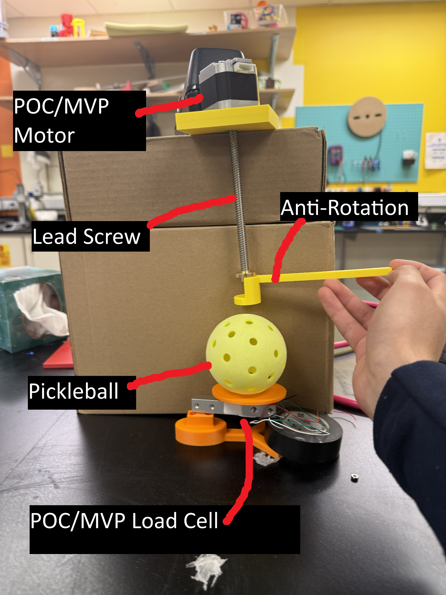
As-built record
The machined POC has not been built yet. As it is built, the record will capture, with photos and video: what was built and how; deviations from the drawings and plans; problems and fixes; reasons for any design change; the final as-built configuration; and actual cost and hours against the estimates above.
| Date | Part or step | Planned | As built | Deviation and reason | Photo / video |
|---|---|---|---|---|---|
| No entries yet: fabrication starts after shop approval of the revised drawings. | |||||